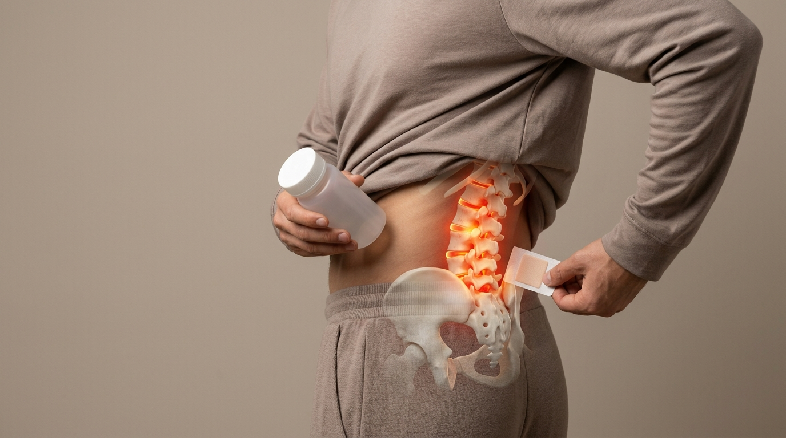

진통제와 파스는 경보음만 끌 뿐, ‘기울어진 척추·골반’은 그대로입니다
일시적으로 뇌로 가는 통증 신호만 차단하는 대증요법의 악순환을 끊어야 합니다. 바른한의원 비수술 추나요법은 통증의 뿌리인 틀어진 골반 비대칭과 좁아진 요추 추간판(디스크) 공간을 한의사가 직접 손으로 밀고 당겨 구조적으로 복원합니다.
01. 원인 진단
골반 경사·요추 전만각 무너짐 및 신경 눌림 확인
02. 추간판 감압
눌려 있던 디스크 수핵 압력을 낮추고 공간 확보
03. 재발 방지 교정
척추 기립근·장요근 긴장 이완 및 중심축 정렬